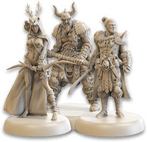
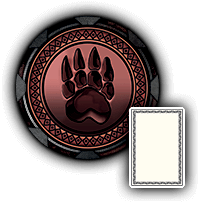
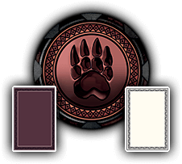
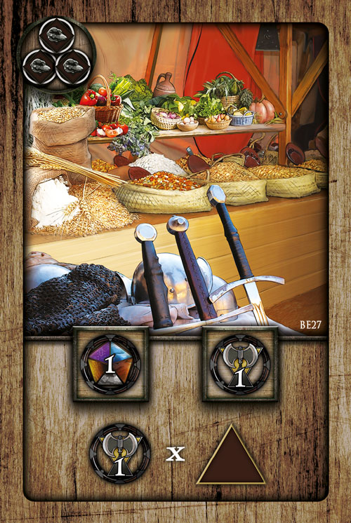
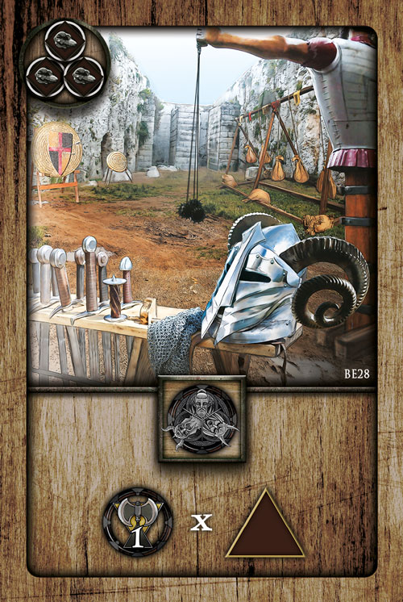
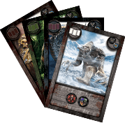
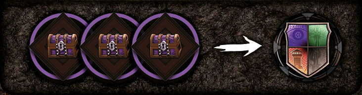

Enter the mysterious World of Fenian, a place where barbarian clans rule wild lands and corrupted civilizations live in decaying cities - a place filled with powers gifted by ancient gods and treacherous demons.
Become a Warlord and lead your clan on the conquest of civilized nations. Take their lands and steal their riches.
You will need a strong economy and an even stronger army. You will have to manage resources and construct buildings, but you will be able to summon the power of ancient gods and demons to gain temporary magical benefits.
Only the strongest clan will prevail on the path to glory, leaving its mark in history.
Goal of the Game
Use your Champions to gather resources, construct Buildings, pray to Gods and lead your troops in battle to conquer civilized regions. In the end, the player with the most Domination points wins.
The game lasts a maximum of 6 Eras, with each Era running the same way.
1st. Maintenance Phase
2nd. Action Phase
3rd. End Phase
1st Phase: Maintenance
Note: Skip this phase in the first Era of the game.
Each player restores their activated God and Warchief cards to the vertical position.
Each player gains the resources indicated on their Buildings.
You can activate each Building only once per Maintenance Phase, and the number of Buildings you can activate corresponds to your position on the Production knowledge track (see Barbarians Knowledge).
Example: Red has two Buildings and only one Production Knowledge. Therefore, they choose one of their two Buildings and gain the resources indicated.
2nd Phase: Action
Players take turns following their order on the Honor track.
In your turn, place one of your Champions on an unoccupied action space of the Volcano, and you may perform the indicated action.
Action spaces are marked with this outline.
Allowed placements:
If it is your first Champion, place it on an action space of the central ring.
If it is your second Champion, place it on an action space of the intermediate ring, but only in one of the two sectors directly linked to the sector your first Champion occupies.
If it is your third Champion, place it on an action space of the external ring, but only in one of the two sectors directly linked to the sector your second Champion occupies.
Some effects may allow you to place a fourth Champion. Place your fourth Champion on an action space of one of the peripheral sectors directly linked to the sector your third Champion occupies.
Note: In the remote case you cannot place your Champion due to a lack of free action spaces, simply skip your turn and gain 2 Domination Points.
Pray to a God or Sacrifice a Warchief:
During your turn, before or after placing a Champion, you can decide to pray to one of your Gods or to sacrifice one of your Warchiefs.
Pray to a God: You can pray to one of your Gods to help you out. During your turn, before or after placing a Champion, you can activate one of your God cards rotating it horizontally to immediately resolve the effect depicted on the bottom of the card.
Sacrifice a Warchief: During your turn, before or after placing a Champion, sacrifice one Warchief to immediately resolve the effect depicted on the bottom-right of that card. Then discard the Warchief card to the bottom of the Warchief deck.
Note: in a single turn you can only pray to one God or sacrifice one Warchief.
You cannot pray to two or more Gods, sacrifice two or more Warchiefs, or both pray to a God and sacrifice a Warchief in the same turn.
You cannot sacrifice an activated Warchief.
The Action Spaces:
Gaining Resources
Keep track of your resources by moving the position of the corresponding token. If you gain 1 resource, move the token 1 step right on that resource track. When you pay 1 resource, move it 1 step left. You can never exceed the limit of 6 of any kind of resource.
You can never pay a resource you don’t have.
Gain 1 Food, 1 Wood and 1 Iron.
Gain 1 Stone, 1 Gold and 2 Domination points.
Gain 2 of the resource indicated.
Gain 3 of the resource indicated.
Gain 1 Food, 1 Wood, 1 Iron, 1 Stone and 1 Gold.
Erect a Building
Choose one of the Building cards from the display, and pay the resources indicated on the top-left corner. Place the building card face up in front of you. If you have more than 4 Building cards, you must immediately discard one to the bottom of the Building deck.
Invoke one God OR invoke one Warchief
Invoke one God
Choose one of the God cards from the display, and pay 1 resource of your choice as indicated on the top-left corner. Gain the Domination Points indicated on the
top-right corner of the card. Place the God card face up in front of you in the vertical position. If you have more than 3 God cards, you must discard one to the bottom of the Gods deck without resolving any effect.
Invoke one Warchief
Choose one of the Warchief cards from the display, and pay 2 Gold resources as indicated on the top-left corner.
Advance your counter on the Honor Track by the amount of crowns on the top-right corner of the card. (1 crown = 1 step, 2 crowns = 2 steps...).
Put the Warchief card in front of you in vertical position. If you have more than 3 Warchief cards, you must discard one to the bottom of the Warchiefs deck without resolving any effect or sacrificing it.
Milestones
Whenever your Honor counter advances past one or more Milestones on the Honor track, you immediately gain the bonuses indicated.
Note: A player gains the Milestone bonus only the first time he advances past it.
Other players can still gain that bonus.
War
First, you can recruit troops.
Pay the amount of resources indicated next to the troop you wish to recruit (see your player gameboard) to gain 1 troop of that type. You can recruit troops until you are satisfied or you run out of resources.
Keep track of your troops in the same way you keep track of resources.
You can never have more than 6 troops of each kind.
Note: The back of the Region cards shows the troops required to fight in the various regions. (e.g. To fight in a Forest region, you need Berserkers and Raiders, and Berserkers are more necessary than Raiders).
Example: Red performs a War action and plans to attack a Glacier region. The back of the Glacier cards suggests that Raiders and Archers will be required. Red recruits troops accordingly.
A) They spend 2 Food and 2 Iron to recruit two Raiders;
B) They spend 1 Food and 1 Wood to recruit one Archer.
After recruitment, you can declare war on the region you wish to conquer. You can attack a region respecting all the following conditions:
The region is adjacent to an already conquered region - it doesn’t matter if it was conquered by you or by another player - or to the starting region (The starting region is the region on the top-left corner of the Map with a volcano depicted on it).
Your Discovery Knowledge is sufficient to explore the island where that region is located (see paragraph Barbarians Knowledge).
The region has a Faction token on it.
Example: Red player has two Discovery Knowledge points, so they can attack only the regions of Fenian, Aaruwn, or Boenhoor, that are adjacent to already conquered regions (or to the starting region), and that contain a faction token.
Once you have determined the region you want to attack, pick up and shuffle the corresponding Region deck.
Each card represents a battle in the corresponding region, and the total number of battles you face is determined by your Tactics Knowledge of the faction token present in that region.
If you have no Tactics Knowledge of the attacked Faction, you must face 6 battles.
Example: Red is attacking the Nefriar faction and they have two Tactics Knowledge points on the Nefriar faction, so they have to face a total of 4 battles. (See Tactics Knowledge).
Now reveal one card from the Region deck. Each card depicts how many, and which type, of troops you need to pay to win the battle.
If you pay up that number of troops, you win the battle and reveal the next card. Call on a Warchief: Instead of paying from your player board, you can rotate a Warchief card into the horizontal position to use the troop indicated in the bottom-left corner of the Warchief card.
Note: You can call on more than one Warchief during the same battle, but each Warchief can be called on only once per Era.
If you don’t want to, or cannot, pay the troops required to win a battle, you immediately suffer a penalty, which depends on the faction you are facing:
Nefriar faction
Pay 1 troop of any kind and lose 1 Domination point. If you cannot pay a troop, you lose 1 additional Domination point.
Shan faction
Pay 1 Gold and 1 Stone. For each resource you cannot pay, you lose 1 Domination point.
Aspidian faction
Move your Honor counter back 2 steps. When your counter is on the “0” space of the Honor track, you lose 1 Domination point for each step back you cannot take.
Note: you don’t gain any eventual Milestone bonuses you pass in this way.
Varg faction
Rotate horizontally 2 cards in front of you, either Gods or Warchiefs. For each card you cannot rotate horizontally, you lose 1 Domination point.
Note: If you have a token on the Defense Knowledge track, you may use it to avoid taking one penalty. (See Defense Knowledge).
Rewards: Some cards have a reward indicated on the bottom-left corner of the card.
At the end of a war, collect the rewards of the battles you won.
Overkill: Some cards indicate that you can pay additional troops (highlighted in red). You don’t need to pay these troops to win that battle, but if you do pay the troops required and all the additional troops, you immediately gain the Domination points indicated on the bottomright corner.
Example: To win this battle, Red must pay 2 Raider troops. Additionally, they may pay 1 Archer to perform an overkill and immediately gain 3 Domination points. Either way, the battle is won, so at the end of this War they will gain a Gold resource.
Once you have faced all the battles, two outcomes are possible.
If you won at least half of the battles rounded up, then you conquer the region.
Take the Faction token of that region and put it in front of you, then place one of your Banners in that region. You immediately score Domination points equal to the number indicated on the Faction token plus Domination points related to the island where you fought (see Map). If you are the first player to conquer a region in that island, take the First Conquer tile of that island to score 3 additional Domination points.
If you didn’t win at least half of the total battles, you do not conquer that region; but you still gain eventual rewards for the battles you won.
Note: You can conquer a maximum of 8 regions per game.
Example: Red won two battles out of four. Since they have won half of the battles, they win the war. They take the Nefriar Faction token from the region and place their Banner. They score 3 Domination points (as indicated on the Faction token) + 2 Domination points (as indicated next to Boenhoor island). Since they aren’t the first player to conquer a region in this island, they don’t gain the 3 Domination points from the First Conquer tile.
Knowledge Tracks
For each ,
advance one of your discs on a Knowledge track by 1 step or place one of your Knowledge discs on the leftmost space of a track where you are not already present.
There are two different types of tracks, Barbarians and Tactics. Barbarians Knowledge refers to technologies and improves different aspects of your clan. Tactics Knowledge is useful to conquer Faction tokens with less effort.
Barbarians Knowledge
Discovery Track: This track extends the range of regions you can attack. If you have no Discovery Knowledge points, you can attack only regions of the starting island. When your disc is on the first space of this track, you can also attack regions of Aaruwn isle. The second space lets you reach the Boenhoor isle and so on.
Bonus: The first player who reaches the last space of this track immediately gains Domination points equal to the number of Faction tokens they’ve collected multiplied by two; the second player who reaches the last space multiplies that by one.
Defense Track: This track allows you to avoid penalties from losing a battle. You can only avoid one penalty during a single war. You can decide when to avoid that penalty based on where your disc is (i.e.: if you are in the first space of the Defense track, you can avoid it only for the first battle; if you are in the second space, only for one of the first two battles, and so on).
Bonus: The first player who reaches the last space of this track immediately gains Domination points equal to the number of Milestones they’ve reached multiplied by two; the second player who reaches the last space multiplies that by one.
Economy Track: For every step on this track, you gain more resources when you perform resource actions on the Volcano. If you are on the first space, you gain 1 additional Food every time you gain at least 1 Food from an action. If you are on the second step, you also gain 1 additional Wood every time you gain at least 1 Wood from an action. If you are on the third step, you also gain 1 additional Iron every time you gain at least 1 Iron from an action. If you are on the last step, you also gain 1 additional Stone every time you gain at least 1 Stone from an action.
Bonus: The first player who reaches the last space of this track immediately gains Domination points equal to every different triplet of Food, Wood and Iron they have, multiplied by two; the second player who reaches the last space multiplies that by one.
Note: You don’t have to spend the resources to score these Domination points.
Production Track: For every step on this track, you can activate a different Building during the Maintenance Phase. If you are on the first space, you can activate 1 Building card during the Maintenance Phase; if you are on the second space, you can activate 2 different Buildings during the Maintenance Phase, and so on.
Bonus: The first player who reaches the last space of this track immediately gains Domination points equal to every Building card in front of them multiplied by two; the second player who reaches the last space multiplies that by one.
Tactics Knowledge
Each track is related to one of the four factions and works in the same way, except for the bonus for reaching the last space.
For every step on these tracks, you reduce the number of battles you have to fight in a war against a specific faction.
Example: If your disc is on the first space of the Aspidian faction Tactics Knowledge track, every time you attack Aspidian you will face 5 total battles. If your token is on the second
space of the Aspidian faction Tactics Knowledge track, you will face 4 total battles.
If you declare war on a particular faction where you don’t have a disc on the corresponding Tactics Knowledge track, you will fight a total of 6 battles.
Bonus: The first player who reaches the last space of the Nefriar faction track immediately recruits 3 troops of their choice and gains 3 Domination points; the second player who reaches the last space chooses either one of the two bonuses.
Bonus: The first player who reaches the last space of the Shan faction track immediately gains 4 resources of their choice and gains 3 Domination points; the second player who reaches the last space chooses either one of the two bonuses.
Bonus: The first player who reaches the last space of the Aspidian faction track immediately advances 2 spaces on the Honor track and gains 3 Domination points; the second player who reaches the last space chooses either one of the two bonuses.
Bonus: The first player who reaches the last space of the Varg faction track immediately picks up the top-most card from either the God deck or the Warchief deck without paying its cost and gains 3 Domination points; the second player who reaches the last space chooses either one of the two bonuses.
Other Actions
On your next turn, you may perform up to two times the effect of the action space where you place your third Champion.
During this Era, you gain a fourth Champion to place later on the fourth ring.
Note: You cannot have more than 4 Champions in each Era.
Trade Actions
Pay 2 Food to advance 1 space on the Barbarians Knowledge and 1 space on the Tactics Knowledge track, and advance your Honor counter by 1 space.
Pay 2 Wood to draw the top card of the Building deck without paying its cost.
Pay 2 Iron to draw the top card of the Warchief or God deck, without paying its cost.
Pay 2 Stone to gain 3 troops of your choice.
Pay 2 Gold to perform a War action. If you win the war, double the Domination points on the Faction token you gain.
Note: First Conquer tiles and additional Domination points of the island are not doubled.
3rd Phase: End of Era
Players recover their Champions from the Volcano.
Following turn order, players resolve the effect of the leftmost face-up card of the Timeline (Demon or Feast). The used card is then flipped face-down.
Players resolve the Final Event depicted on the board, below the Demon or Feast that has just been resolved: refill the display area and perform an automatic rotation of one ring (See Final Event)
A new Era begins.
Demon Card
Demons are powerful entities that will ask you to pay a price to please them. First off, players must choose to pay 1 Gold or lose 5 Domination points. After that, following turn order, players can offer a higher tribute to gain a powerful advantage. Every Demon offers a different advantage (See Demons).
Example: Pay 5 resources of your choice to perform two Barbarians Knowledge actions or two Tactics Knowledge actions.
Feast Card
Following turn order, every player can offer some of their resources to altars: Choose one of the two possible offerings and pay the amount of resources required, gaining Domination points. If you choose to offer nothing, you gain the 2 resources indicated in the last row.
Example: You can pay 1 Gold and 1 Wood to score 3 Domination points, or you can pay 1 Gold and 3 Wood to score 7 Domination points. Alternatively, you can pay nothing and gain 2 Wood.
Final Event
After resolving the Demon or Feast card, discard all the Building, God and Warchief cards from the display area to the bottom of their respective decks. Reveal 4 new Building cards, 2 new God cards and 2 new Warchief cards that will be available in the next Era.
Rotate the Volcano ring highlighted by 1 or 2 steps, as indicated on the board.
e.g.: the leftmost icon indicates to rotate the intermediate ring by 2 steps counter-clockwise.
The game can end in three different ways:
At the end of the sixth Era.
If a player reaches 100 Domination Points; keep playing until the end of that Era.
All the Faction tokens on the Map have been conquered; keep playing until the end of that Era.
Before the final scoring, following turn order, each player can decide to perform a War action.
Note: you don’t need to place a Champion to perform this action; follow all the standard rules for War.
Final Scoring
Players score points according to their Buildings and their Banners to add to their Domination points.
Buildings scoring:
Each Building shows one of five different criteria to score points:
Score 2 Domination points for each Faction token you collected.
Score 2 Domination points for each different type of Building you erected.
Note: The type of Building is determined by its artwork.
Score 2 Domination points for each Barbarian and Tactics Knowledge track where your disc reached the last space.
Score 2 Domination points for each God card in front of you.
Score 2 Domination points for each leftover resource you have, in the type indicated.
Banner scoring:
Each player scores points for each of their group of regions conquered.
A group is formed by linked regions conquered by the same player (i.e., with the same Banner).
Regions in a group:
1
2
3
4
5
6
7
8
Domination points:
0
1
4
9
16
25
36
49
Example: Yellow scores 4 Domination points for their group of regions on Fenian and Aaruwn (3 regions linked) and no points for the single region conquered on Cae.
The player who has the most Domination points at the end of Final Scoring is the winner of the game. In case of a tie, the player who’s first on the Honor Track wins.
You can choose to play the game using the special powers each clan has on their gameboard. Before setup, players randomly pick a clan. The unique powers of the clans are described below:
During a War, when you reveal a battle, you can choose to discard that battle instead of facing it and replace it with the next card.
Note: You cannot discard the replaced battle in the same fashion.
Note: You can use this power multiple times during the same War.
Each time you sacrifice a Warchief, you can immediately resolve the effect depicted on the bottom-right of that card twice; then discard the Warchief card to the bottom
of the Warchief deck as usual.
In the 3rd phase of each Era, you can resolve the Feast or Demon card twice.
Note: If you choose to resolve a Feast a second time, you can choose any of the three possible options of the Feast card.
Note: If you choose to resolve a Demon a second time, you do not have to pay 1 Gold / lose 5 domination points a second time.
At the beginning of each Era, before the Maintenance phase, you can gain 2 resources of your choice.
1 Gameboard
The centerpiece of the game. It contains the Volcano, Knowledge tracks, the Honor track and the Domination points track to mark the progress of every clan.
1 Volcano
(4 plastic pieces and 4 cardboard cutout rings).
Where the players place their Champions to perform actions and play out their strategy.
1 Map of Fenian
Represents the civilized territories that will be invaded by the Barbarian clans.
20 Faction tokens (5 for each faction)
Represent the decaying cities of the civilizations you will conquer.
72 Region cards (18 for each kind of region: glacier, forest, mountain and swamp)
Represent the battles a clan must face to win a War. They vary depending on the nature of the terrain.
5 First Conquer tiles
Gained by the first player who conquers a region on a new island.
25 Building cards
Generate a constant income of resources for players who erect them, and give Domination points at the end of the game.
16 God cards
Give additional powers to players who invoke them. They can be activated once per turn.
16 Warchief cards
Allow players who sacrifice them to gain an immediate boost, or can be used to fight in battle.
4 Feast cards
Every clan has the opportunity to choose one of their effects at the end of odd Eras.
4 Demon cards
Every clan deals with one of these cards at the end of even Eras.
4 Player Gameboards
The 5 tracks on the left are used to mark the player’s available resources. The 3 tracks on the right are used to mark army troops.
16 Champions (4 per player) Meeples in place of miniatures. (Only for Wooden edition)
Placed on the Volcano to perform actions.
20 Resource tokens (1 Food, 1 Wood, 1 Iron, 1 Stone and 1 Gold per player) Round tokens in place of miniatures. (Only for Wooden edition)
Used to track resources.
32 Banners (8 Banners per player) Square tokens in place of miniatures. (Only for Wooden edition)
Used to track regions conquered.
52 Coloured bases (13 per player. Used with Champions and Banners for the Iron Edition of this game)

12 Troop tokens (1 Archer, 1 Berserker and 1 Raider per player) Round tokens in place of miniatures. (Only for Wooden edition)
Used to track troops.
32 Knowledge discs (8 per player)
Used to track knowledge.
4 Domination point counters (1 per player)
Used to track Domination points.
4 Honor track discs (1 per player)
Used to track Honor points.
This additional content improves variability and adds replay value. These rules explain the Hunt Expansion and several new modules you can mix and match with the base game or with the Hunt Expansion.
Introduction
This expansion introduces several new mechanics and a new set of rings to increase the options and strategies of the base game.
Hunt Expansion can be played with any map. We highly recommend playing this expansion after some games with the base game, as you get more familiar with the terms and mechanics of Barbarians: The Invasion.
Set Up
The setup is the same as the base game, except for the following changes:
1a. Use the cardboard cutout pieces of the expansion in place of the rings provided in the base game.
Randomly choose 4 Magma Tokens and place them face-up on four different sectors, one in each ring.
2a. Place the 4 Hunt marker tokens on each region of Arvya.
3a. Sort the Beast and Monster cards by color, shuffle these four decks separately, and place them face-up next to the Region decks. This forms the common display of Beasts and Monsters, divided into four decks, one for each Region type.
6a. Take the Skullcrushers for each player clan, and place them on the starting region of the Map (the region with a giant volcano).
New Actions
The new rings of the Volcano feature different action spaces.
War action works like a standard War action, except that you get a bonus on some regions. The bonus is indicated by the small card icon:
If you attack a Glacier region, you face one less battle.
If you attack a Forest region, you face one less battle.
If you attack a Mountain region, you face one less battle.
You can move your Skullcrusher up to as many steps as the number indicated on the action space. For each step, you can move the Skullcrusher to an adjacent region in any direction. At the end of the movement, if you land on a region where a Hunt marker is present, you can immediately choose to start a Hunt action!
Note: You can decide to move fewer steps than the number indicated by the action.
Note: You can move to any adjacent region. You don’t need to have any Discovery Knowledge to reach new islands with your Skullcrusher.
Hunt
If, immediately after a Skullcrusher action, your Skullcrusher is on a region containing a Hunt Marker, you can try to hunt down a Beast or Monster. First you can recruit troops as in a War action. When you are done, look at the face-up card in the Beasts and Monsters display corresponding to the region your Skullcrusher is on. The card tells you how many battles you have to face. (e.g.: If your Skullcrusher is on a Forest region containing the Hunt Marker, and the Snake of the Forest is visible on the display, you can hunt it. In order to hunt down the Snake of the Forest, you need to ght two battles - drawing cards from the Forest region deck).
Flip simultaneously all the region cards you have to face. You can decide to pay the total cost of gray troops indicated on the cards to capture the creature, or pay nothing and return all the revealed cards to their deck.
Note: These are not standard battles. No rewards or Overkill are possible during this action. Moreover, you can’t use any bonuses (such as Defense Track Knowledge, Warchief cards, or Beast power).
At the end of a Hunt, two outcomes are possible:
You can’t or don’t want to pay the total cost of troops: the creature escapes, and the hunt fails.
You pay the total cost of troops: you have either tamed the beast or collected the trophy of the monster.
- Take the Beast (or Monster) card you defeated and put it in front of you. OR
- Immediately score the Domination points indicated on the top-right of the card, multiplied by the number indicated next to the island where you hunted it.
Example: You hunted down the Snake of the Forest in the forest of Arvya island, thus you score 5 Domination points (multiplied by 1).
In both cases, move the Hunt Marker to the successive Island on a region of the same type as the one it was placed. If it was on Dörth island, remove the piece from the Map. It will not be used anymore during this game.
Beast and Monsters
They are gained in the same exact way, but have different uses.
Tamed Beasts: You can use your Beast cards during any War action to immediately win a battle, without paying any troops; you can use each tamed beast only one time for each War, and only if you are facing battles on the same regions indicated on your Beast card:

Glacier
Forest
Mountain

Glacier or Swamp
Forest or Swamp
Mountain or Swamp
If you use a Beast to win a battle, you collect eventual rewards at the end of the War, as usual, including any Domination points for Overkill.
Example: You are facing a War on a Swamp region, and you have the Mammoth beast in front of you. You can use it to win a battle and gain any eventual reward and Overkill Domination points without paying any troops. The Mammoth beast could also be used in a War on a Glacier region.
Monster Trophies: During your turn, before or after placing your Champion, you can discard a Monster trophy to resolve the effect depicted on the card. Return discarded Monster cards to the gamebox.
Example: During any one of your turns, you can discard the Yeti of the Glacier region to immediately perform a War action. If you win, triple the Domination points depicted on the Faction token.
Magma Tokens
Whenever you land on an action space of a sector where a magma token is present, you immediately deal damage to other clans.
The damage depends on the type of the magma token (resource or troop). All the enemy clans must immediately lose one of that type of resource or troop, if they can; otherwise they lose 1 Domination point.
At the end of the 3rd Phase of each Era, move each Magma token to the next sector in a clockwise direction.
These are the rules of four new “modules”.
Each module can be added to the base game or to the Hunt Expansion on its own, or combined with the other modules for even more excitement! The game follows all of the normal rules from Barbarians: The Invasion, except for the following changes.
New “modules” can be played with any map.
Personal Objectives
Before step 1 of the Setup, shuffle the 5 Personal Objective cards and randomly deal one to each player face-down. Players can look at their Personal Objective but cannot show it to the others. Return the unused Personal Objectives to the gamebox.
There are two ways to use Personal Objectives. They can be either:
- Conserved to score additional Domination points at the end of the game, for meeting the criteria indicated on the card. OR
- Discarded to gain an immediate bonus; a player can discard their Personal Objective at any time during their own turn, before or after placing a Champion. The player then gains the bonus indicated on the bottom of the card. Return any discarded Personal Objectives to
the gamebox; they won’t be used again in this game.
End game scoring: Score 1/3/7/12/18/23 Domination points if at the end of the game your Honor track disc has advanced further than 1/2/3/4/5/6 Milestones, respectively. (e.g.: If your disc on the Honor track has advanced further than 3 Milestones at the end of the game, you score 7 Domination points). Immediate bonus: Discard this card to immediately advance your Honor track disc by 4 spaces on the Honor track.
End game scoring: Score 2/7/14/20 Domination points if you have 1/2/3/4 pairs of “Building
card + God or Warchief card” respectively, at the end of the game.
(e.g.: If you have 3 Buildings, 3 Gods and 2 Warchiefs at the end of the game, you score 14 Domination points). Immediate bonus: Discard this card to immediately take the top card of the Building, God or Warchief deck without paying any cost.
End game scoring: Score 2/7/14/20 Domination points if at the end of the game you collected 1/2/3/4 different Faction tokens, respectively. (e.g.: If you have 2 Nefriar Faction tokens and 3 Aspidian Faction tokens at the end of the game, you score 7 Domination points). Immediate bonus: Discard this card to immediately perform a War action. If you win the war, double the Domination points indicated on the Faction token conquered.
End game scoring: Score 2/7/14/20 Domination points if at the end of the game you
have your Tactics Knowledge discs on the right-most space of 1/2/3/4 Tactics Knowledge tracks respectively.
(e.g.: If you have 4 Nefriar Knowledge points, 4 Aspidian Knowledge points and 2 Varg
Knowledge points at the end of the game, you score 7 Domination points). Immediate bonus: Discard this card to immediately gain 2 Tactics Knowledge points.
End game scoring: Score 2/7/14/20 Domination points if at the end of the game you have your Barbarian Knowledge discs on the right-most space of 1/2/3/4 Knowledge tracks respectively.
(e.g.: If you have 4 Discovery Knowledge points, 4 Production Knowledge points and 2 Defense Knowledge points at the end of the game, you score 7 Domination points). Immediate bonus: Discard this card to immediately gain 2 Barbarian Knowledge points.
Special Buildings
Before step 4 of the Setup, add these Building cards to the Buildings deck.

Gain 1 Domination point and 1 Resource of your choice.

Gain 1 troop of your choice.
Gain 1 Barbarian or Tactics Knowledge of your choice.
Advance by 1 step on the Honor track.
At the end of the game, each of these Buildings scores 1 Domination point for every Milestone that your Honor track counter has passed.
Havoc Maker Tokens
Before step 2 of the Setup, shuffle the Havoc Maker tokens and randomly place one of them on each Milestone of the Honor track. These new bonuses replace the Milestone bonuses of the base game.
Additional Demons and Feasts
Before step 5 of the Setup, add these Demon and Feast cards to the Demon and Feast decks of the base game.
You may discard one of your Warchief cards, without performing its effect, to immediately double the current number of all your troops on your player gameboard.
You may lose 2 Domination points to immediately activate all your Building cards, regardless of your Production Knowledge.
Kickstarter Exclusive Map
Use this map in place of the Fenian map of the base game.
This exclusive map features some unique maritime routes that connect very distant islands. All the rules are the same as the base game.
Set Up
The setup is the same as the base game, except for the following changes:
2a. Set up the map.
Return the faction tokens in the regions marked “3+” and “4+” to the gamebox.
4a. Randomly draw 10 God, 10 Warchief and 14 Building cards; and shuffle them all together in a single deck. Place this deck close to the gameboard. Return all the other cards to the gamebox. Now reveal the top 7 cards and place them in a row beside the deck. This forms the display area.
6a. Take the Champions of one non-player color and place those Champions on four random action spaces of the Volcano, one in each ring.
7a. Draw a random God card from the unused God cards and keep it face up. Then advance your Domination point counter by the amount indicated on the top-right corner of that God card.
8a. In any order, stack your Honor track counter and the Honor track counter of the non-player color on the starting space of the Honor track.
9a. Place 2 of your Knowledge discs in the leftmost space of two different Knowledge tracks or 1 disc in the second space of a single Knowledge track.
10a. Shuffle the Fate cards and form a deck face-down beside your player gameboard.
11a. Choose the difficulty of your game:
Easy: 80 Domination Points
Normal: 100 Domination Points
Hard: 130 Domination Points
Insane: 150 Domination Points
Custom: Choose on your own.
Record: The highest number of Domination Points you scored in a solo-game.
Game Flow
The game follows the same rules as the base game, except for the following changes:
The game lasts a maximum of 6 Eras, with each Era running the same way.
Pre-phase
1st Phase: Maintenance
2nd Phase: Action
3rd Phase: End of Era
Pre-phase
Before the Maintenance phase, shuffle the Fate deck and draw the top card.
Then immediately resolve all the effects indicated, from top to bottom.
Move the non-player color Champions by either 0, 1 or 2 action spaces in clockwise or counter-clockwise direction.
Place (or advance) the nonplayer color Knowledge discs on the indicated track by the amount of steps indicated. If a Knowledge disc reaches the last space of a track before you do, it will prevent you from taking the first player bonus.
Discard to the bottom of the deck the cards of the display marked with a red slash.
Advance the non-player color Honor counter on the Honor track by the number of steps indicated.
Check the Map to identify the regions targetable by the non-player color. They must respect these conditions:
The region is adjacent to an already conquered region — it doesn’t matter if it was conquered by you or by a non-player color — or to the starting region.
The region has a Faction token on it.
Among the targetable regions, pick the one with the Faction token of the left-most Faction indicated. In case there are none, look for the second left-most Faction indicated, and so on until you find a valid Faction token.
In case there are multiple valid Faction tokens, pick the one with the highest Domination point value.
Place a non-player color Banner on that region, and return the Faction token to the gamebox.
Note: The regions with a non-player color Banner are considered regions conquered by another player.
3rd. Phase: End of Era
Before the first step of this phase, slide the remaining cards of the display to the left of the row to fill in the empty card spaces. Draw new cards and place them in the right-most space of the row until there are 7 cards in the display.
Game End
Final Scoring
If the non-player color Honor counter is further than yours on the Honor track, lose Domination points equal to the difference between the two Honor counters.
At the end of the final scoring, if you have more Domination Points than the difficulty level chosen in the beginning, you win. Otherwise, your Clan succumbs to Fate.
Special Rules
Drawing a card
Every time you have to draw the top card of a specific deck, instead look through the deck of cards — without revealing them — until you find a card of the type you were looking for, and take it.
Note: Do not change the order of the cards in the deck.
Discarding a card
Every time you have to draw the top card of a specific deck, instead look through the deck of cards — without revealing them — until you find a card of the type you were looking for, and take it.
Hunt Expansion:
4 alternative cardboard cutout rings
1 alternative Map of Fenian
(northern map)
8 Magma tokens
4 Hunt markers Tokens in place of miniatures (Only for Wooden edition)
4 Skullcrusher miniatures Meeples in place of miniatures (Only for Wooden edition)

6 Monster cards
6 Beast cards
Personal Objectives:
5 Personal objective cards
Special Buildings:
4 additional Building cards
Havoc Maker Tokens:
6 Milestone tokens
Additional Demons and Feasts:
2 additional Demon cards
4 additional Feast cards
Kickstarter Exclusive Map:
1 alternative map of Fenian
One-Player Mode:
One-player rules
6 Fate cards
You must choose to perform the effect on the right or the effect on the left of the slash.
Pay the cost on the left of the arrow to perform the effect on the right.
Gain any three resources of your choice.
Gain any three troops of your choice.
This symbol refers to Faction tokens you have.
Rotate the Volcano ring where you place (or have placed) the Champion this turn by 1 step in any direction.
Advance 1 step on the Honor track.
Gain the Domination Points indicated.
Take one of the God cards from the display.
Take one of the Warchief cards from the display.
Immediately perform a War action.
Choose one of the Building cards available on the display.
Take the top card of the Building deck without paying its cost. Apply all the other normal rules for Building cards.
Take the top card of the Warchief deck or the God deck without paying any cost. Apply all the other normal rules for Warchief and God cards.
Advance one of your discs on a Barbarian Knowledge Track by 1 space, or place one of your Knowledge discs on the leftmost space of a Barbarians track where you are not already present.
Advance one of your discs on a Tactics Knowledge Track by 1 space, or place one of your Knowledge discs on the leftmost space of a Tactics track where you are not already present.
Demons
You may pay 5 resources of your choice to perform two Barbarian Knowledge actions or two Tactics Knowledge actions.

You may discard one of your God cards to immediately advance your counter 3 spaces on the Honor Track and gain a fourth Champion. Use this fourth Champion in the next Era.
You may pay 3 Gold to place one of your Banners in a region, following standard rules for choosing a region (see War section on page 7), and gain Domination points as if you have conquered that region by a war action. Note: This is not a war action: do not recruit troops or fight any battles.
You may pay 1 troop of each kind to gain 8 Domination points.
Banner Scoring
Each player scores points for each group of regions they conquered: